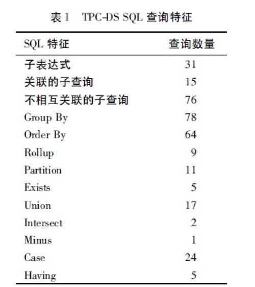
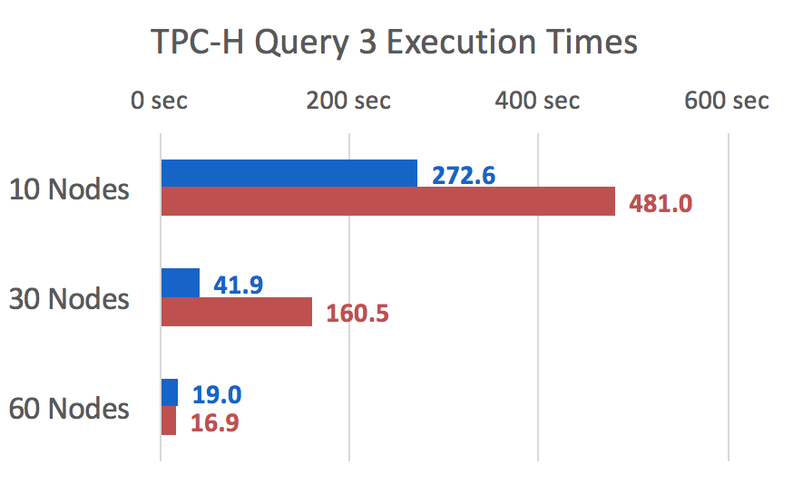
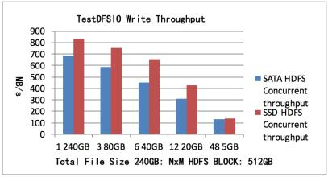
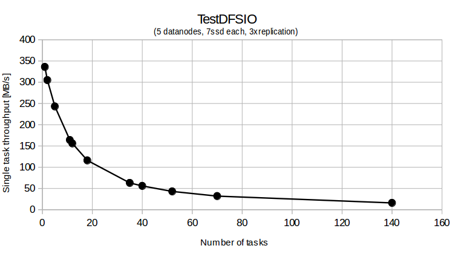

DEW 测试平台
- Dew Technology test frame workand How to write the automation case
- TPC-DS
-
TPC-DS采用星型、雪花型等多维数据模式。它包含7张事实表，17张纬度表平均每张表含有18列。其工作负载包含99个SQL查询，覆盖SQL99和2003的核心部分以及OLAP。这个测试集包含对大数据集的统计、报表生成、联机查询、数据挖掘等复杂应用，测试用的数据和值是有倾斜的，与真实数据一致。可以说TPC-DS是与真实场景非常接近的一个测试集，也是难度较大的一个测试集。
- 一共99个测试案例，遵循SQL'99和SQL 2003的语法标准，SQL案例比较复杂
- 分析的数据量大，并且测试案例是在回答真实的商业问题
- 测试案例中包含各种业务模型（如分析报告型，迭代式的联机分析型，数据挖掘型等）
- 几乎所有的测试案例都有很高的IO负载和CPU计算需求
- TPC-H
-
TPC-H 是美国交易处理效能委员会(TPC,Transaction Processing Performance Council) 组织制定的用来模拟决策支持类应用的一个测试集.目前,在学术界和工业界普遍采用它来评价决策支持技术方面应用的性能. 这种商业测试可以全方位评测系统的整体商业计算综合能力，对厂商的要求更高，同时也具有普遍的商业实用意义。
TPC-H 基准测试包括 22 个查询(Q1~Q22),其主要评价指标是各个查询的响应时间,即从提交查询到结果返回所需时间.TPC-H 基准测试的度量单位是每小时执行的查询数( QphH@size)，其中 H 表示每小时系统执行复杂查询的平均次数，size 表示数据库规模的大小,它能够反映出系统在处理查询时的能力.TPC-H 是根据真实的生产运行环境来建模的,这使得它可以评估一些其他测试所不能评估的关键性能参数.总而言之,TPC 组织颁布的TPC-H 标准满足了数据仓库领域的测试需求,并且促使各个厂商以及研究机构将该项技术推向极限。
 - Hibench 7.0
-
HIbench 是一个大数据的benchmark测试的套件，用来测试框架的速度，吞吐率，资源利用率等。
它支持的框架有
- hadoopbench
- sparkbench
- stormbench
- flinkbench
- gearpumpbench
- YCSB
-
YCSB 可测试HYPERTABLE,HBASE，HIVE，HAWQ etc
  - Spark Bench Legacy
-
Spark Bench可测试Machine Learning library etc
- Spark Bench
-
Spark Bench可测试Machine Learning library etc
- Hive-Testbench-hive14
-
测试 HIVE on SPARK, HIVE1 and Hive server2
- Distruted file system Performance testing guidance
-
利用HDFS原来的测试包来测试 CEPH的读写速度,通过实现了自己的Mapper class/Reduce用来读写数据，生成统计信息，考核文件系统接口的各方面性能。
CEPH的性能DFSIO测试报告（from Intel Hibench)
HADOOP over CEPH的性能测试白皮书 - Swift-Bench
-
Benchmark tool for OpenStack Swift

- Rally for Openstack and Docker performance
-
Rally 是一个基准测试工具，可以帮助我们判断出OpenStack表现如何，特别是在有负载的场景中。你可以使用Rally的各种场景测试脚本来对你的OpenStack环境进行性能测试，基准测试，功能验证。
- COSBench for Cloud storage performance
-
Cosbench是Intel的开源云存储性能测试软件，COSBench目前已经广泛使用与云存储测试，并作为云存储的基准测试工具使用
- Artificial Intelligence performance
-
MNIST
IMAGNET

- Jenkins
-
全球领先的开源自动化服务器,Jenkins 提供了数以百计的插件来支持构建、部署和自动化任何项目。
开发者从繁杂的集成中解脱出来，专注于更为重要的业务逻辑实现上。同时 Jenkins 能实施监控集成中存在的错误，提供详细的日志文件和提醒功能，还能用图表的形式形象地展示项目构建的趋势和稳定性。
- 持续的软件版本发布/测试项目
- 监控外部调用执行的工作
- Bugzilla
-
问题跟踪
开发者从繁杂的集成中解脱出来，专注于更为重要的业务逻辑实现上。同时 Jenkins 能实施监控集成中存在的错误，提供详细的日志文件和提醒功能，还能用图表的形式形象地展示项目构建的趋势和稳定性。
- 持续的软件版本发布/测试项目
- 监控外部调用执行的工作
- Team knowledge sharing -Confluence Wiki
-
Confluence是一个专业的企业知识管理与协同软件,一个企业级别的wiki.通过它可以实现团队成员之间的协作和信息共享。
Confluence使用简单,但它强大的编辑和站点管理特征能够帮助团队成员之间共享信息,文档协作,集体讨论.目前,Confluence被广泛地用于项目团队,开发团队,市场销售团队.
- 持续的软件版本发布/测试项目
- 监控外部调用执行的工作